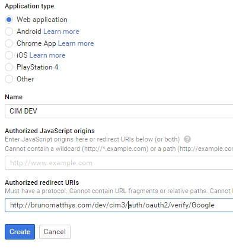

go to https://developers.facebook.com
- Click on "Add a New App"
- Select WWW - website
- choose a name for your app
- now you will arrive at the setup screen:
- click on "show" and enter your FB password
- Click on Settings and enter the Site URL under Website:
- click on Advanced on the top middle. Scroll down to "Client OAuth Settings": we will enter a "Valid OAuth redirect URIs":
- add the client id and token via adminpanel - oauth providers.
go to https://console.developers.google.com
As usual Google is going to make it more complicated. I hope you will arrive on your dashboard:
- click on where the arrow points in the above screencapture and Create a project ...
- choose a name for your project
- confirm and wait for the project creation to finish;
- click on the blue box "Use Google APIs":
- click on Credentials on the left, then go to the OAuth Conscent Screen
- fill out the Homepage URL and go to Credentials;
- select Web application;
- set the "Authorized redirect URIs"

- set the correct URL as shown above (use the part without the domain)
- REMARK: this can take a few minutes before it works: let Google cool down for a moment
- add the client id and token via adminpanel - oauth providers.